|
|
| nudibranchs text index | photo index |
| Phylum Mollusca > Class Gastropoda > sea slugs > Order Nudibranchia > Family Phyllidiidae |
| Varicose
phyllid nudibranch Phyllidia varicosa Family Phyllidiidae updated May 2020 Where seen? This colourful nudibranch is sometimes encountered on some of our Southern shores, on coral rubble and reefs. Features: 4-5 cm long. Body long, hard with bumps (called tubercles) without feathery external gills on the back. Distinguished by 3-6 ridges of bumps along the length of the body. The bumps are blue-grey where they join the body and tipped yellow. The short rhinophores are orange. On the underside, there is a dark stripe or line of dark dots/dashes along the length of its foot. It secretes noxious substances from glands in the white coloured portion of its body. |
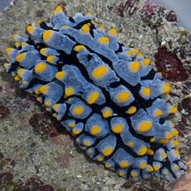 Terumbu Semakau, May 12. |
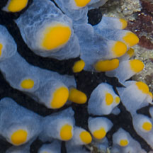 Orange rhinophores. |
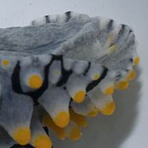 Another set of tentacles underneath. Terumbu Semakau, May 12 |
|
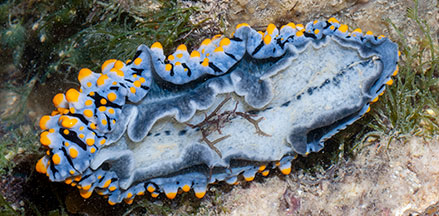 Dark stripe or line of dark dashes/dots on the underside. Pulau Jong, Jul 06. |
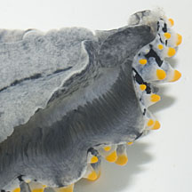 Gills on the sides instead of in a feathery bunch on the back Terumbu Semakau, May 12 . |
| Varicose phyllid nudibranchs on Singapore shores |
On wildsingapore
flickr
|
| Other sightings on Singapore shores |
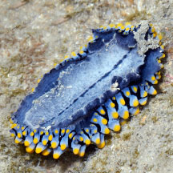 |
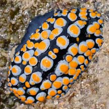 Big Sisters Island, Feb 22 Photo shared by James Koh on facebook. |
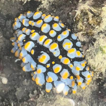 Big Sisters Island, Feb 25 Photo shared by Kelvin Yong on facebook. |
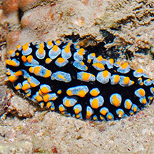 Small Sisters Island, Feb 15 Photo shared by Loh Kok Sheng on his blog. |
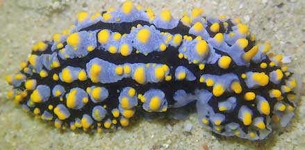 St John's Island, Apr 21 Photo shared by Jianlin Liu on facebook. |
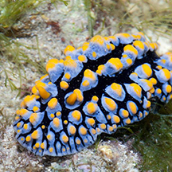 Pulau Jong, Apr 15 Photo shared by Marcus Ng on facebook. |
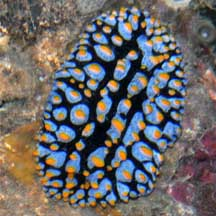 Pulau Hantu, Apr 09 Photo shared by Toh Chay Hoon on her blog. |
Links
|